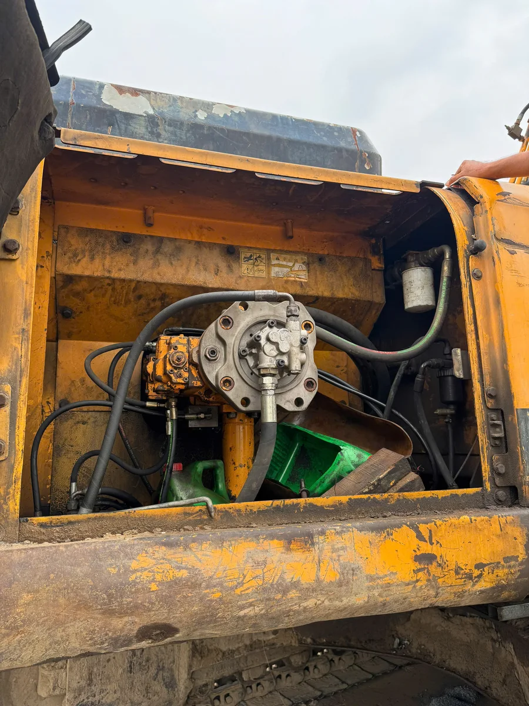
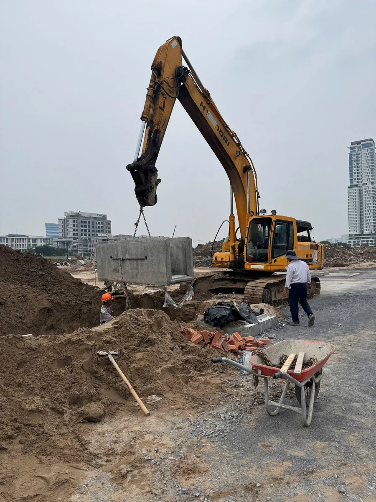

01 / MACHINE CONTEXT
Identify the asset and its working envelope.
Whole-machine views establish scale, major systems and the space available around the equipment.
- Confirm visible machine configuration
- Note working envelope and nearby structures
- Locate likely service and installation zones